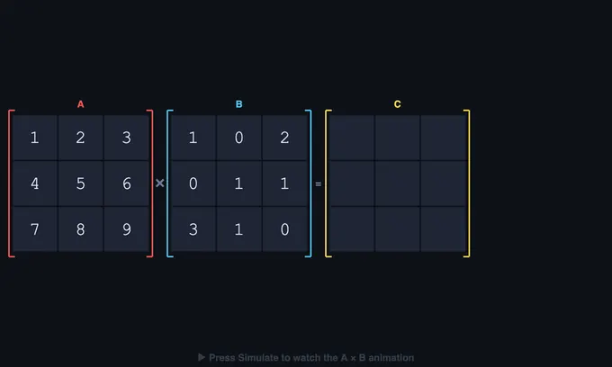

Matrix Calculator and Operations Simulator
Multiply • Add • Subtract • Inverse — animated, up to 6×6 — Simulate • Explore • Practice • Quiz
User Guide
1 Overview
This is an all-in-one matrix calculator and visual trainer supporting four operations on matrices up to 6×6: multiplication, addition, subtraction, and inverse (Gauss-Jordan elimination). Pick the operation, edit the matrices, and either watch the animation or get the instant answer.
2 Choosing the Operation
The Operation tab row picks the active operation:
- A × B — matrix multiplication. B's rows are forced to match A's columns.
- A + B and A − B — element-wise. B is forced to the same shape as A.
- A⁻¹ Inverse — computes the inverse of square A. B is hidden because it is not needed.
- Aᵀ Transpose — swaps rows and columns: A[i][j] becomes Aᵀ[j][i]. Works on any shape. B is hidden.
- k · A — scalar multiplication. Type the scalar k in the "Scalar k" input next to the size selectors. Result has the same shape as A.
- Aⁿ — matrix power. Type the integer n (1–10) in the "Power n" input. A must be square. Result is the n-fold product A·A·…
- det(A) — determinant via Gauss elimination with partial pivoting. A must be square. Single-number result; det = 0 means A is singular.
- tr(A) — trace = sum of diagonal entries. A must be square. Animation walks down the diagonal accumulating the running sum.
- rank(A) — number of linearly independent rows (= non-zero pivot rows in RREF). Works on any shape.
- A·x = b — solve a linear system. A must be square; B is repurposed as the column vector b (n×1). Result x is the n-element solution vector found via Gauss-Jordan on [A | b].
Switching operations resets the animation and updates the action button label.
3 Data Entry & Layout
The interface follows top-down flow: operation → size & speed → presets → matrix editors (data entry) → action buttons → animation canvas → formula / step log → result. You always edit the matrices at the top and watch the result build up below.
4 Simulate — Animations Per Operation
Multiplication: the active row of A and column of B are highlighted, a pulsing pointer joins each pair, the products and the running sum Σ build up in the live formula until a cell of C lands with a flash.
Addition / Subtraction: the canvas highlights one cell of A and the same cell of B; the cell-level operation appears in the formula and the result drops into C[i][j] with a flash.
Inverse: the canvas shows the augmented matrix [A | I]. Gauss-Jordan steps animate one at a time — row swaps, scaling the pivot row, and eliminating other rows. The Step Log below the formula narrates each operation in standard linear-algebra notation (R₂ ← R₂ − 3·R₁). When the left half becomes the identity, the right half is A⁻¹.
5 Calculator Use, Export & Paste
To use this purely as a calculator, set the operation and shapes, edit the matrices, and press Show Result Instantly — no animation, immediate answer.
Right-click the canvas for the full context menu:
- Save as Image (PNG) — downloads the current canvas with a
NHIT VisualLabwatermark - Copy Result Matrix — copies C to clipboard tab-separated (paste straight into Excel/Sheets)
- Export Result as CSV — downloads a proper
.csvfile - Paste into Matrix A / B — reads your clipboard and parses tab, comma, or space separated values (multi-line for rows) into the chosen matrix. Compatibility is enforced.
- Undo / Redo — or use the keyboard shortcuts Ctrl+Z / Ctrl+Shift+Z
6 Presets
Five presets adapt to the current operation: a 2D rotation, the identity, a non-square pair, a reflection + scale, and a 4×4 engineering stiffness matrix. Non-square presets are automatically squared up when you are in inverse mode.
7 Explore Mode
Four tabs — Basics, Rules, Applications, Properties — explain the dot product, when each operation is defined, real-world uses (graphics, robotics, neural networks, FEA), and key algebraic identities including the inverse rules (AB)⁻¹ = B⁻¹ · A⁻¹.
8 Practice & Quiz
Practice rotates through multiplication, addition, subtraction and 2×2 inverse questions. Type the answer for the highlighted cell and press Check. Show Working reveals the full step-by-step calculation. Quiz mixes question types over 5 rounds with a final star rating: 5/5 = three gold stars, 3-4 = two green, 0-2 = one red.
9 Keyboard Shortcuts
- Click a cell — open inline editor
- Enter — commit the typed value
- Tab / Shift+Tab — move to next / previous cell, wrapping around
- ↑ ↓ — move up / down within the matrix
- ← → — move left / right (when caret is at the input edge)
- Esc — cancel the edit
- Ctrl+Z — undo last change
- Ctrl+Shift+Z or Ctrl+Y — redo
10 Tips & Common Errors
- Wrong shape? The simulator forces compatibility automatically: B = A.cols rows for multiply, B = A for add/subtract, A square for inverse.
- Singular matrix. If A has no inverse (det = 0), the inverse animation stops and reports it. Try the 2×2 rotation preset for a guaranteed invertible matrix.
- Order matters. AB ≠ BA in general — matrix multiplication is not commutative. Addition is.
- Identity is neutral. A·I = A for multiplication. A·A⁻¹ = I.
- Result shape. Multiply: (m×n)·(n×p) = (m×p). Add/Sub: shapes match. Inverse: (n×n).
Matrix Calculator — Multiply, Add, Subtract, and Invert Matrices Visually

This matrix calculator covers four linear-algebra operations on matrices up to 6×6: multiplication (C[i][j] = Σk A[i][k]·B[k][j]), element-wise addition and subtraction (same shape required), and matrix inverse via Gauss-Jordan elimination. Each operation animates step-by-step so students see exactly how each cell of the result is built.
Matrix algebra powers computer graphics, robotics kinematics, neural networks, finite element analysis, and quantum mechanics. The compatibility rules differ per operation, and the simulator enforces each one visually with locked dimension dropdowns and labelled constraints.
| Operation | Shape rule | Result shape |
|---|---|---|
| A · B (multiply) | A.cols = B.rows | m × p |
| A + B (add) | A and B same shape | m × n |
| A − B (subtract) | A and B same shape | m × n |
| A⁻¹ (inverse) | A square, det(A) ≠ 0 | n × n |
| Aᵀ (transpose) | any shape | n × m |
| k · A (scalar multiply) | any shape | m × n |
| Aⁿ (power) | A square, integer n ≥ 1 | n × n |
| det(A) (determinant) | A square | single number |
| tr(A) (trace) | A square | single number |
| rank(A) | any shape | single integer 0…min(m,n) |
| A·x = b (linear solve) | A square, b is n×1, det(A) ≠ 0 | vector n × 1 |
How do you multiply two matrices step by step?
To compute a cell of A·B, slide along a row of A while sliding down a column of B, multiplying corresponding entries and summing them. The total is one cell of C. This simulator animates the row and column highlights, builds the running sum as a stacked column on the right, and lands the final value into the respective cell with a pulsing arrow — the same way you would do it on paper.
When is a matrix invertible, and how do you find the inverse?
A square matrix A is invertible if and only if its determinant is non-zero. The simulator computes A⁻¹ by reducing the augmented matrix [A | I] to [I | A⁻¹] using Gauss-Jordan elimination with partial pivoting. Each row operation (swap, scale, eliminate) is highlighted and narrated, and singular matrices (det = 0) are detected automatically and reported.
Why is AB not equal to BA in matrix multiplication?
Matrix multiplication is not commutative because the operation involves combining rows of the first matrix with columns of the second — the geometric meanings of "row of A" and "column of B" are not symmetric. AB and BA generally produce different results, and sometimes only one of the two products is even defined. However, multiplication is associative ((AB)C = A(BC)) and distributive over addition.
Who Uses This Simulator?
Engineering students learning linear algebra, computer science students studying graphics transformations, mechanical engineering students working with stiffness and transformation matrices, and instructors who need a clean classroom visualization of the row-by-column rule and Gauss-Jordan elimination. Presets cover identity, rotation, reflection, non-square, and engineering-style matrices.
Explore Related Simulators
If you found this matrix calculator helpful, explore our Calculus Visualizer, Math Function Graph Generator, Karnaugh Map Solver, and Logic Gates Simulator for more hands-on mathematics practice.